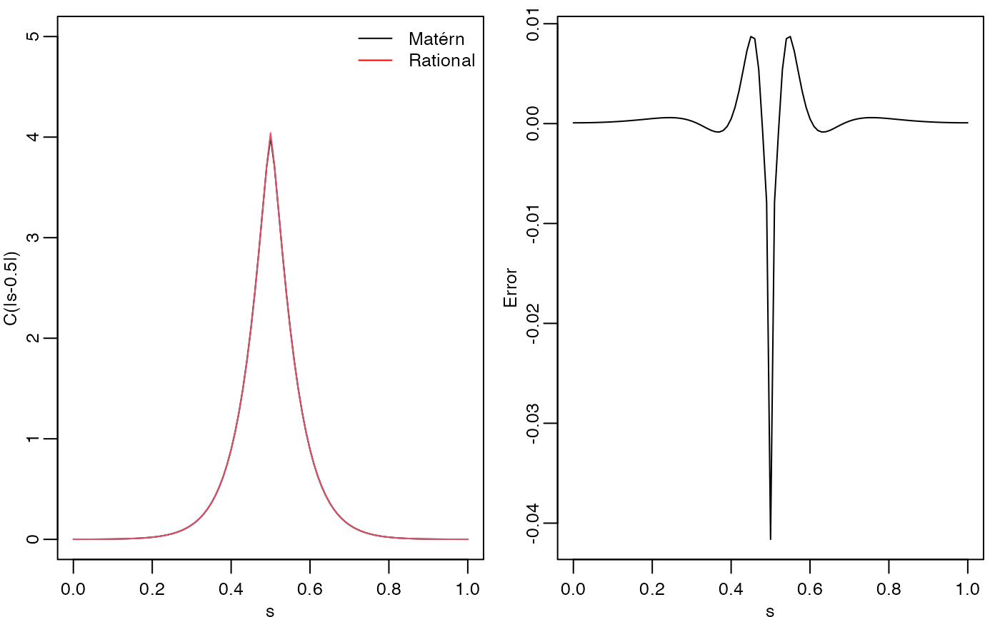
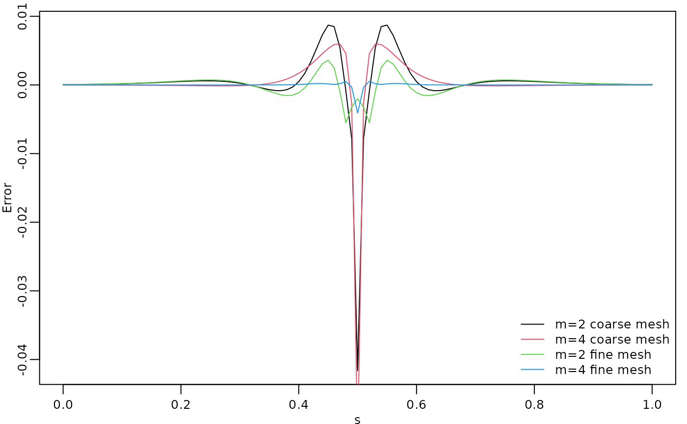
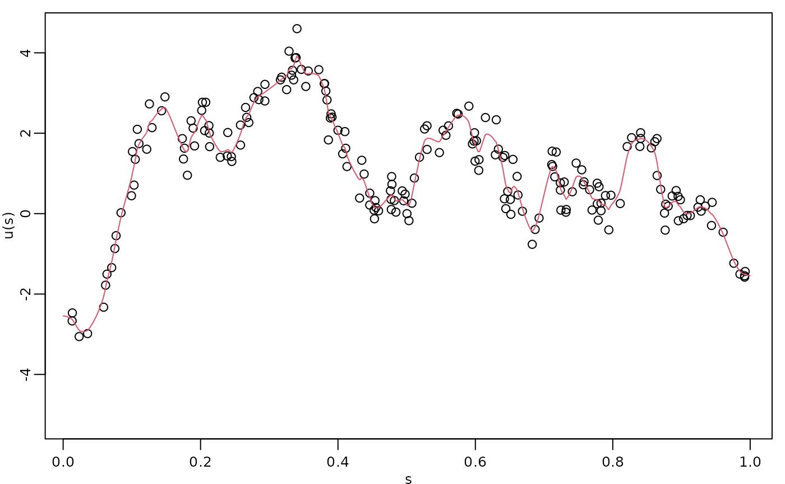
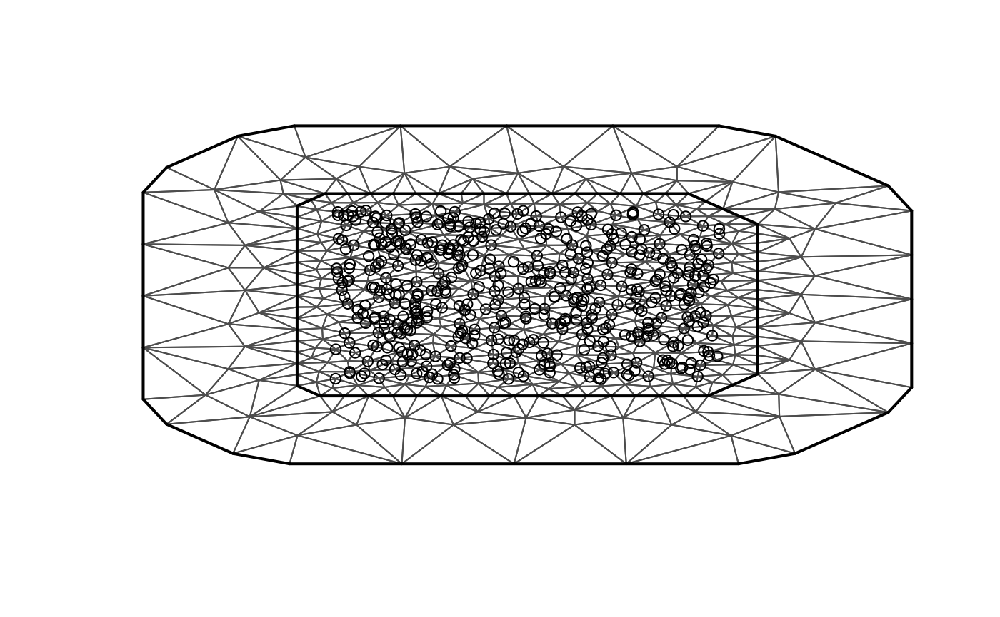
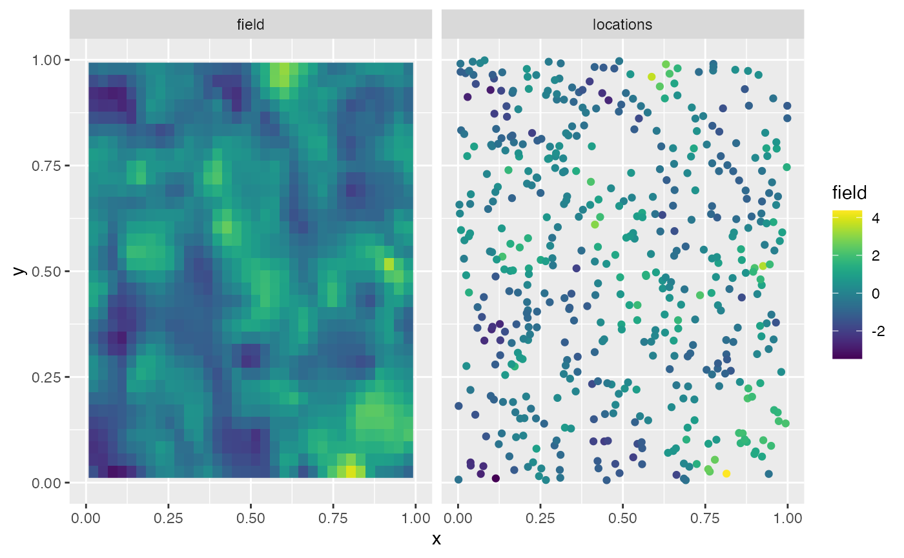

Rational approximation with the rSPDE package
David Bolin, Alexandre B. Simas, Zhen Xiong
Created: 2021-12-04. Last modified: 2023-10-28.
Source:vignettes/rspde_cov.Rmd
rspde_cov.RmdIntroduction
In this vignette we will introduce the covariance-based rational SPDE approach and illustrate how to perform statistical inference with it.
The covariance-based approach is an efficient alternative to the operator-based rational SPDE approach by Bolin and Kirchner (2020) which works when one has SPDE driven by Gaussian white noise. We refer the reader to Bolin, Simas, and Xiong (2023) for the theoretical details of the approach.
Details about the operator-based rational SPDE approach are given in
the Operator-based rational approximation
vignette. For the R-INLA and
inlabru implementations of the covariance-based rational
SPDE approach we refer the reader to the vignettes R-INLA implementation of the rational SPDE
approach and inlabru implementation of
the rational SPDE approach respectively.
Covariance-based rational SPDE approach
Let us first present the basic setup. We want to model the precipitation as a two-dimensional random field \(u\) within a bounded domain, where each location on the domain associates with a random variable which describe the local precipitation.
In the SPDE approach, introduced in Lindgren, Rue, and Lindström (2011) we model \(u\) as the solution of the following SPDE: \[L^{\alpha/2}(\tau u) = \mathcal{W},\] where \(L = -\Delta +\kappa^2 I\) and \(\mathcal{W}\) is the standard Gaussian white noise. Here, \(\alpha\), \(\kappa\) and \(\tau\) are three parameters we want to estimate. In the standard SPDE approach, we write, for a general dimension \(d\), \(\alpha = \nu + d/2\) and assume \(\nu\) to be fixed so that \(\alpha\) is an integer. In the rational SPDE approach we can use any value of \(\nu>0\) and also estimate it from data.
Now let us briefly describe how covariance based rational SPDE approach works in statistical inference. The main idea is to perform the rational approximation directly on the covariance operator, which is given by \(L^{-\alpha}\), instead of on the solution \(u\). To this end, we begin by obtaining an approximation of the random field \(u\), which is the solution of the SPDE above, by using the finite element method (FEM): \[u_h(\mathbf{s}_i)=\sum_{j=1}^{n_h} \hat{u}_j \varphi_j(\mathbf{s}_i),\] where \(\{\hat{u}_j\}_{j = 1}^{n_h}\) are stochastic weights and \(\{\varphi_j(\mathbf{s}_i)\}_{j = 1}^{n_h}\) are fixed piecewise linear and continuous basis functions obtained from a triangulation of the spatial domain. We then obtain a FEM approximation of the operator \(L\), which is given by \(L_h\), and the covariance operator of \(u_h\) is given by \(L_h^{-\alpha}\).
Now, by using the rational approximation on \(L_h\), we can approximate covariance operator \(L_h^{-\alpha}\) as \[L_{h,m}^{-\alpha} = L_h^{-\lfloor\alpha\rfloor} p(L_h^{-1})q(L_h^{-1})^{-1},\] where \(\lfloor\alpha\rfloor\) denotes the integer part of \(\alpha\), \(m\) is the order of rational approximation, \(p(L_h^{-1}) = \sum_{i=0}^m a_i L_h^{m-i}\) and \(q(L_h^{-1}) = \sum_{j=0}^m b_j L_h^{m-i}\), with \(\{a_i\}_{i = 0}^m\) and \(\{b_j\}_{j = 0}^m\) being known coefficients obtained from a rational approximation of the function \(x^{\alpha - \lfloor\alpha\rfloor}\).
The next step is to perform a partial fraction decomposition of the rational function \(p(L_h^{-1})q(L_h^{-1})^{-1}\), which yields the representation \[L_{h,m}^{-\alpha} =L_h^{-\lfloor\alpha\rfloor} \left(\sum_{i=1}^{m} r_i (L_h-p_i I)^{-1} +k\right).\] Based on the above operator equation, we can write the covariance matrix of the stochastic weights \(\hat{\textbf{u}}\), where \(\hat{\textbf{u}}=[\hat{u}_1,...,\hat{u}_{n_h}]^\top\), as \[\mathbf{\Sigma}_{\hat{\textbf{u}}} = (\textbf{L}^{-1}\textbf{C})^{\lfloor\alpha\rfloor} \sum_{i=1}^{m}r_i(\textbf{L}-p_i\textbf{C})^{-1}+\textbf{K}, \] where \(\textbf{C} = \{C_{ij}\}_{i,j=1}^{n_h}\), \(C_{ij} = (\varphi_i,\varphi_j)_{L_2(\mathcal{D})}\), is the mass matrix, \(\textbf{L} = \kappa^2\textbf{C}+\textbf{G}\), \(\textbf{G} = \{G_{ij}\}_{i,j=1}^{n_h}\), \(G_{ij}=(\nabla\varphi_i,\nabla\varphi_j)_{L_2(\mathcal{D})}\), is the stiffness matrix, and \[\textbf{K}=\left\{ \begin{array}{lcl} k\textbf{C} & & {\lfloor\alpha\rfloor=0}\\ k\textbf{L}^{-1}(\textbf{C}\textbf{L}^{-1})^{\lfloor\alpha\rfloor-1} & & {\lfloor\alpha\rfloor\geq 1}\\ \end{array} \right. .\]
The above representation shows that we can express \(\hat{\textbf{u}}\) as \[\hat{\textbf{u}}=\sum_{k=1}^{m+1}\textbf{x}_k,\] where \(\textbf{x}_k = (x_{k,1}, \ldots, x_{k,n_h})\), \[\textbf{x}_i \sim N(\textbf{0},\textbf{Q}_i^{-1}),\] and \(\textbf{Q}_i\) is the precision matrix of \(\textbf{x}_i\), which is given by \[\textbf{Q}_i=\left \{ \begin{array}{lcl} (\textbf{L}-p_i\textbf{C})(\textbf{C}^{-1}\textbf{L})^{\lfloor\alpha\rfloor}/r_i, & & {i = 1,...,m}\\ \textbf{K}^{-1}, & & {i = m+1}\\ \end{array}. \right.\]
We, then, replace the Matérn latent field by the latent vector given above, which has precision matrix given by \[\textbf{Q}=\begin{bmatrix}\textbf{Q}_1& &\\&\ddots&\\& &\textbf{Q}_{m+1}\end{bmatrix}.\] Now, assume we observe \[y_i = u_h(\mathbf{s}_i) + \varepsilon_i,\quad i=1,\ldots, N,\] where \(\varepsilon_i\sim N(0,\sigma_\varepsilon^2)\) are iid measurement noise. Then, we have that \[y_i = u_h(\mathbf{s}_i) + \varepsilon_i = \sum_{j=1}^{n_h} \hat{u}_j \varphi_j(\mathbf{s}_i) + \varepsilon_i = \sum_{k=1}^{m+1} \sum_{j=1}^{n_h} x_{k,j} \varphi(\mathbf{s}_i) + \varepsilon_i.\] This can be written in a matrix form as \[\textbf{y} = \overline{\textbf{A}} \textbf{X} + \boldsymbol{\varepsilon},\] where \(\textbf{y} = [y_1,\ldots,y_N]^\top, \textbf{X} = [\textbf{x}_1^\top,\ldots,\textbf{x}_{m+1}^\top]^\top\), \(\boldsymbol{\varepsilon} = [\varepsilon_1,\ldots,\varepsilon_N]^\top\), \[\overline{\textbf{A}}=\begin{bmatrix}\textbf{A}&\cdots&\textbf{A}\end{bmatrix}_{n\times n_h(m+1)},\] and \[\textbf{A}=\begin{bmatrix}\varphi_1(s_1)&\cdots&\varphi_{n_h}(s_1)\\\vdots&\vdots&\vdots\\\varphi_1(s_n)&\cdots&\varphi_{n_h}(s_n)\end{bmatrix}.\] We then arrive at the following hierarchical model: \[\begin{align} \textbf{y}\mid \textbf{X} &\sim N(0,\sigma_\varepsilon\textbf{I})\\ \textbf{X}&\sim N(0,\textbf{Q}^{-1}) \end{align}.\]
With these elements, we can, for example, use R-INLA to compute the
posterior distribution of the three parameters we want to estimate.
Constructing the approximation
In this section, we explain how to to use the function
matern.operators() with the default argument
type, that is, type="covariance", which is
constructs the covariance-based rational approximation. We will also
illustrate the usage of several methods and functions related to the
covariance-based rational approximation. We will use functions to sample
from Gaussian fields with stationary Matérn covariance function, compute
the log-likelihood function, and do spatial prediction.
The first step for performing the covariance-based rational SPDE
approximation is to define the FEM mesh. We will also illustrate how
spatial models can be constructed if the FEM implementation of the
fmesher package is used. When using the R-INLA package, we also
recommend the usage of our R-INLA implementation of
the rational SPDE approach. For more details, see the R-INLA implementation of the rational SPDE
approach vignette.
We begin by loading the rSPDE package:
Assume that we want to define a model on the interval \([0,1]\). We then start by defining a vector with mesh nodes \(s_i\) where the basis functions \(\varphi_i\) are centered.
s <- seq(from = 0, to = 1, length.out = 101)We can now use matern.operators() to construct a
rational SPDE approximation of order \(m=2\) for a Gaussian random field with a
Matérn covariance function on the interval. We also refer the reader to
the Operator-based rational approximation
for a similar comparison made for the operator-based rational
approximation.
kappa <- 20
sigma <- 2
nu <- 0.8
r <- sqrt(8*nu)/kappa #range parameter
op_cov <- matern.operators(loc_mesh = s, nu = nu,
range = r, sigma = sigma, d = 1, m = 2, parameterization = "matern"
)The object op_cov contains the matrices needed for
evaluating the distribution of the stochastic weights \(\boldsymbol{\mathrm{u}}\). If we want to
evaluate \(u_h(s)\) at some locations
\(s_1,\ldots, s_n\), we need to
multiply the weights with the basis functions \(\varphi_i(s)\) evaluated at the locations.
For this, we can construct the observation matrix \(\boldsymbol{\mathrm{A}}\), with elements
\(A_{ij} = \varphi_j(s_i)\), which
links the FEM basis functions to the locations. This matrix can be
constructed using the function fm_basis() from the
fmesher package. However, as observed in the introduction
of this vignette, we have decomposed the stochastic weights \(\boldsymbol{\mathrm{u}}\) into a vector of
latent variables. Thus, the \(A\)
matrix for the covariance-based rational approximation, which we will
denote by \(\overline{A}\), is actually
given by the \(m+1\)-fold horizontal
concatenation of these \(A\) matrices,
where \(m\) is the order of the
rational approximation.
To compute the precision matrix from the covariance-based rational
approximation one can use the precision() method on the
CBrSPDEobj object (the object returned by the
matern.operators() function with the default type, which is
type="covariance"):
Q <- precision(op_cov)To evaluate the accuracy of the approximation, let us compute the
covariance function between the process at \(s=0.5\) and all other locations in
s and compare with the true Matérn covariance function. The
covariances can be calculated as \[
\overline{\boldsymbol{\mathrm{A}}}
\boldsymbol{\mathrm{Q}}^{-1}\overline{\boldsymbol{\mathrm{v}}}.
\] Here, \(\boldsymbol{\mathrm{Q}}\) is the precision
matrix obtained from the covariance-based rational approximation, \(\boldsymbol{\mathrm{A}}\) is an identity
matrix since we are evaluating the approximation in the nodes of the FEM
mesh, \(\overline{\boldsymbol{\mathrm{v}}}\) is the
\((m+1)\)-fold vertical concatenation
of the vector \(\boldsymbol{\mathrm{v}}\), where \(\boldsymbol{\mathrm{v}}\) is a vector with
all basis functions evaluated in \(s=0.5\).
library(fmesher)
mesh_1d <- fm_mesh_1d(s)
v <- t(fm_basis(x = mesh_1d, loc = 0.5))
v_bar <- kronecker(matrix(1, nrow = 3), v)
A <- Diagonal(101)
A_bar <- kronecker(matrix(1, ncol = 3), A)
c_cov.approx <- (A_bar) %*% solve(Q, v_bar)Let us now compute the true Matérn covariance function on the interval \((0,1)\), which is the folded Matérn, see Theorem 1 in An explicit link between Gaussian fields and Gaussian Markov random fields: the stochastic partial differential equation approach for further details.
c.true <- folded.matern.covariance.1d(rep(0.5, length(s)), abs(s), kappa, nu, sigma)The covariance function and the error compared with the Matérn covariance are shown in the following figure.
opar <- par(
mfrow = c(1, 2), mgp = c(1.3, 0.5, 0),
mar = c(2, 2, 0.5, 0.5) + 0.1
)
plot(s, c.true,
type = "l", ylab = "C(|s-0.5|)", xlab = "s", ylim = c(0, 5),
cex.main = 0.8, cex.axis = 0.8, cex.lab = 0.8
)
lines(s, c_cov.approx, col = 2)
legend("topright",
bty = "n",
legend = c("Matérn", "Rational"),
col = c("black", "red"),
lty = rep(1, 2), ncol = 1,
cex = 0.8
)
plot(s, c.true - c_cov.approx,
type = "l", ylab = "Error", xlab = "s",
cex.main = 0.8, cex.axis = 0.8, cex.lab = 0.8
)
par(opar)
To improve the approximation we can increase the degree of the polynomials, by increasing \(m\), and/or increase the number of basis functions used for the FEM approximation. Let us, for example, compute the approximation with \(m=4\) using the same mesh, as well as the approximation when we increase the number of basis functions and use \(m=2\) and \(m=4\).
op_cov2 <- matern.operators(
range = r, sigma = sigma, nu = nu,
loc_mesh = s, d = 1, m = 4,
parameterization = "matern"
)
Q2 <- precision(op_cov2)
v_bar2 <- kronecker(matrix(1, nrow = 5), v)
A_bar2 <- kronecker(matrix(1, ncol = 5), A)
c_cov.approx2 <- (A_bar2) %*% solve(Q2, v_bar2)
s2 <- seq(from = 0, to = 1, length.out = 501)
op_cov <- matern.operators(
range = r, sigma = sigma, nu = nu,
loc_mesh = s2, d = 1, m = 2,
parameterization = "matern"
)
mesh_s2 <- fm_mesh_1d(s2)
Q3 <- precision(op_cov)
A2 <- fm_basis(mesh_s2, s)
v2 <- t(fm_basis(mesh_s2, 0.5))
v2_bar <- kronecker(matrix(1, nrow = 3), v2)
A2_bar <- kronecker(matrix(1, ncol = 3), A2)
c_cov.approx3 <- (A2_bar) %*% solve(Q3, v2_bar)
op_cov <- matern.operators(
range = r, sigma = sigma, nu = nu,
loc_mesh = s2, d = 1, m = 4,
parameterization = "matern"
)
Q4 <- precision(op_cov)
v2_bar2 <- kronecker(matrix(1, nrow = 5), v2)
A2_bar2 <- kronecker(matrix(1, ncol = 5), A2)
c_cov.approx4 <- (A2_bar2) %*% solve(Q4, v2_bar2)The resulting errors are shown in the following figure.
opar <- par(mgp = c(1.3, 0.5, 0), mar = c(2, 2, 0.5, 0.5) + 0.1)
plot(s, c.true - c_cov.approx,
type = "l", ylab = "Error", xlab = "s", col = 1,
cex.main = 0.8, cex.axis = 0.8, cex.lab = 0.8
)
lines(s, c.true - c_cov.approx2, col = 2)
lines(s, c.true - c_cov.approx3, col = 3)
lines(s, c.true - c_cov.approx4, col = 4)
legend("bottomright",
bty = "n",
legend = c("m=2 coarse mesh", "m=4 coarse mesh", "m=2 fine mesh", "m=4 fine mesh"),
col = c(1, 2, 3, 4),
lty = rep(1, 2), ncol = 1,
cex = 0.8
)
par(opar)
Since the error induced by the rational approximation decreases exponentially in \(m\), there is in general rarely a need for an approximation with a large value of \(m\). This is good because the size of \(\boldsymbol{\mathrm{Q}}\) increases with \(m\), which makes the approximation more computationally costly to use. To illustrate this, let us compute the norm of the approximation error for different \(m\).
errors <- rep(0, 4)
for (i in 1:4) {
op_cov <- matern.operators(
range = r, sigma = sigma, nu = nu,
loc_mesh = s2, d = 1, m = i,
parameterization = "matern"
)
Q <- precision(op_cov)
v_bar <- kronecker(matrix(1, nrow = i + 1), v2)
A_bar <- kronecker(matrix(1, ncol = i + 1), A2)
c_cov.approx <- (A_bar) %*% solve(Q, v_bar)
errors[i] <- norm(c.true - c_cov.approx)
}
print(errors)## [1] 0.977500618 0.086659189 0.017335545 0.008432137We see that the error decreases very fast when we increase \(m\) from \(1\) to \(4\), without any numerical instability. This is an advantage of the covariance-based rational approximation when compared to the operator-based rational approximation. See Operator-based rational approximation for details on the numerical instability of the operator-based rational approximation.
Using the approximation
When we use the function matern.operators(), we can
simulate from the model using the simulate() method. To
such an end we simply apply the simulate() method to the
object returned by the matern.operators() function:
u <- simulate(op_cov)If we want replicates, we simply set the argument nsim
to the desired number of replicates. For instance, to generate two
replicates of the model, we simply do:
u.rep <- simulate(op_cov, nsim = 2)Fitting a model
There is built-in support for computing log-likelihood functions and
performing kriging prediction in the rSPDE package. To
illustrate this, we use the simulation to create some noisy observations
of the process. For this, we first construct the observation matrix
linking the FEM basis functions to the locations where we want to
simulate. We first randomly generate some observation locations and then
construct the matrix.
set.seed(1)
s <- seq(from = 0, to = 1, length.out = 501)
n.obs <- 200
obs.loc <- runif(n.obs)
mesh_s <- fm_mesh_1d(s)
A <- fm_basis(x = mesh_s, loc = obs.loc)We now generate the observations as \(Y_i = 2 - x1 + u(s_i) + \varepsilon_i\), where \(\varepsilon_i \sim N(0,\sigma_e^2)\) is Gaussian measurement noise, \(x1\) is a covariate giving the observation location. We will assume that the latent process has a Matérn covariance with \(\kappa=20, \sigma=1.3\) and \(\nu=0.8\):
kappa <- 20
sigma <- 1.3
nu <- 0.8
r <- sqrt(8*nu)/kappa
op_cov <- matern.operators(
loc_mesh = s, nu = nu,
range = r, sigma = sigma, d = 1, m = 2,
parameterization = "matern"
)
u <- simulate(op_cov)
sigma.e <- 0.3
x1 <- obs.loc
Y <- 2 - x1 + as.vector(A %*% u + sigma.e * rnorm(n.obs))
df_data <- data.frame(y = Y, loc = obs.loc, x1 = x1)Let us create a new object to fit the model:
op_cov_est <- matern.operators(
loc_mesh = s, d = 1, m = 2
)Let us now fit the model. To this end we will use the
rspde_lme() function:
fit <- rspde_lme(y~x1, model = op_cov_est,
data = df_data, loc = "loc")We can get a summary of the fit with the summary()
method:
summary(fit)##
## Latent model - Whittle-Matern
##
## Call:
## rspde_lme(formula = y ~ x1, loc = "loc", data = df_data, model = op_cov_est)
##
## Fixed effects:
## Estimate Std.error z-value Pr(>|z|)
## (Intercept) 1.2741 1.1894 1.071 0.284
## x1 -0.5165 2.0453 -0.253 0.801
##
## Random effects:
## Estimate Std.error z-value
## alpha 1.35010 0.18991 7.109
## tau 0.03687 0.03558 1.036
## kappa 16.69842 8.78458 1.901
##
## Random effects (Matern parameterization):
## Estimate Std.error z-value
## nu 0.85010 0.18991 4.476
## sigma 1.47008 0.31734 4.632
## range 0.15617 0.04824 3.237
##
## Measurement error:
## Estimate Std.error z-value
## std. dev 0.3310 0.0241 13.74
## ---
## Signif. codes: 0 '***' 0.001 '**' 0.01 '*' 0.05 '.' 0.1 ' ' 1
##
## Log-Likelihood: -145.9043
## Number of function calls by 'optim' = 76
## Optimization method used in 'optim' = L-BFGS-B
##
## Time used to: fit the model = 27.93883 secsLet us compare the parameters of the latent model:
print(data.frame(
sigma = c(sigma, fit$matern_coeff$random_effects[2]),
range = c(r, fit$matern_coeff$random_effects[3]),
nu = c(nu, fit$matern_coeff$random_effects[1]),
row.names = c("Truth", "Estimates")
))## sigma range nu
## Truth 1.30000 0.1264911 0.8000000
## Estimates 1.47008 0.1561726 0.8501003
# Total time
print(fit$fitting_time)## Time difference of 27.93884 secsWe can also speed up the optimization by setting
parallel=TRUE (which uses implicitly the
optimParallel function):
fit_par <- rspde_lme(y~x1, model = op_cov_est,
data = df_data, loc = "loc", parallel = TRUE)Here is the summary:
summary(fit_par)##
## Latent model - Whittle-Matern
##
## Call:
## rspde_lme(formula = y ~ x1, loc = "loc", data = df_data, model = op_cov_est,
## parallel = TRUE)
##
## Fixed effects:
## Estimate Std.error z-value Pr(>|z|)
## (Intercept) 1.2741 1.1894 1.071 0.284
## x1 -0.5165 2.0453 -0.253 0.801
##
## Random effects:
## Estimate Std.error z-value
## alpha 1.35010 0.18991 7.109
## tau 0.03687 0.03558 1.036
## kappa 16.69842 8.78458 1.901
##
## Random effects (Matern parameterization):
## Estimate Std.error z-value
## nu 0.85010 0.18991 4.476
## sigma 1.47008 0.31734 4.632
## range 0.15617 0.04824 3.237
##
## Measurement error:
## Estimate Std.error z-value
## std. dev 0.3310 0.0241 13.74
## ---
## Signif. codes: 0 '***' 0.001 '**' 0.01 '*' 0.05 '.' 0.1 ' ' 1
##
## Log-Likelihood: -145.9043
## Number of function calls by 'optim' = 76
## Optimization method used in 'optim' = L-BFGS-B
##
## Time used to: fit the model = 31.63456 secs
## set up the parallelization = 2.45727 secsLet us compare with the true values and compare the time:
print(data.frame(
sigma = c(sigma, fit_par$matern_coeff$random_effects[2]), range = c(r, fit_par$matern_coeff$random_effects[3]),
nu = c(nu, fit_par$matern_coeff$random_effects[1]),
row.names = c("Truth", "Estimates")
))## sigma range nu
## Truth 1.30000 0.1264911 0.8000000
## Estimates 1.47008 0.1561726 0.8501003
# Total time (time to fit plus time to set up the parallelization)
total_time <- fit_par$fitting_time + fit_par$time_par
print(total_time)## Time difference of 34.09185 secsKriging
Finally, we compute the kriging prediction of the process \(u\) at the locations in s
based on these observations.
Let us create the data.frame with locations in which we
want to obtain the predictions. Observe that we also must provide the
values of the covariates.
df_pred <- data.frame(loc = s, x1 = s)We can now perform kriging with the predict()
method:
u.krig <- predict(fit, data = df_pred, loc = "loc")## Warning: The `data` argument of `predict()` is deprecated as of rSPDE 2.3.2.9000.
## ℹ Please use the `newdata` argument instead.
## ℹ `data` was provided but not `newdata`. Setting `newdata <- data`.
## This warning is displayed once every 8 hours.
## Call `lifecycle::last_lifecycle_warnings()` to see where this warning was
## generated.The simulated process, the observed data, and the kriging prediction are shown in the following figure.
opar <- par(mgp = c(1.3, 0.5, 0), mar = c(2, 2, 0.5, 0.5) + 0.1)
plot(obs.loc, Y,
ylab = "u(s)", xlab = "s",
ylim = c(min(c(min(u), min(Y))), max(c(max(u), max(Y)))),
cex.main = 0.8, cex.axis = 0.8, cex.lab = 0.8
)
lines(s, u.krig$mean, col = 2)
par(opar)
Fitting a model with replicates
Let us illustrate how to simulate a dataset with replicates and then
fit a model to such data. Recall that to simulate a latent model with
replicates, all we do is set the nsim argument to the
number of replicates.
We will use the CBrSPDEobj object (returned from the
matern.operators() function) from the previous example,
namely op_cov.
Now, let us generate the observed values \(Y\):
Note that \(Y\) is a matrix with 20
columns, each column containing one replicate. We need to turn
y into a vector and create an auxiliary vector
repl indexing the replicates of y:
y_vec <- as.vector(Y.rep)
repl <- rep(1:n.rep, each = n.obs)
df_data_repl <- data.frame(y = y_vec, loc = rep(obs.loc, n.rep))We can now fit the model in the same way as before by using the
rspde_lme() function:
fit_repl <- rspde_lme(y_vec ~ -1, model = op_cov_est, repl = repl,
data = df_data_repl, loc = "loc", parallel = TRUE)## Warning in rspde_lme(y_vec ~ -1, model = op_cov_est, repl = repl, data =
## df_data_repl, : The optimization failed to provide a numerically
## positive-definite Hessian. You can try to obtain a positive-definite Hessian by
## setting 'improve_hessian' to TRUE or by setting 'parallel' to FALSE, which
## allows other optimization methods to be used.## Warning in sqrt(diag(inv_fisher)): NaNs producedLet us see a summary of the fit:
summary(fit_repl)##
## Latent model - Whittle-Matern
##
## Call:
## rspde_lme(formula = y_vec ~ -1, loc = "loc", data = df_data_repl,
## model = op_cov_est, repl = repl, parallel = TRUE)##
## No fixed effects.##
## Random effects:
## Estimate Std.error z-value
## alpha 1.2190 NaN NaN
## tau 0.0626 NaN NaN
## kappa 17.5450 1.1527 15.22
##
## Random effects (Matern parameterization):
## Estimate Std.error z-value
## nu 0.719034 NaN NaN
## sigma 1.274727 0.053342 23.90
## range 0.136699 0.009292 14.71
##
## Measurement error:
## Estimate Std.error z-value
## std. dev 0.299449 0.004881 61.35
## ---
## Signif. codes: 0 '***' 0.001 '**' 0.01 '*' 0.05 '.' 0.1 ' ' 1
##
## Log-Likelihood: -2757.289
## Number of function calls by 'optim' = 60
## Optimization method used in 'optim' = L-BFGS-B
##
## Time used to: fit the model = 1.32398 mins
## set up the parallelization = 2.46056 secsLet us compare with the true values:
print(data.frame(
sigma = c(sigma, fit_repl$matern_coeff$random_effects[2]),
range = c(r, fit_repl$matern_coeff$random_effects[3]),
nu = c(nu, fit_repl$matern_coeff$random_effects[1]),
row.names = c("Truth", "Estimates")
))## sigma range nu
## Truth 1.300000 0.1264911 0.8000000
## Estimates 1.274727 0.1366991 0.7190341
# Total time
print(fit_repl$fitting_time)## Time difference of 1.323981 minsWe can obtain better estimates of the Hessian by setting
improve_hessian to TRUE, however this might
make the process take longer:
fit_repl2 <- rspde_lme(y_vec ~ -1, model = op_cov_est, repl = repl,
data = df_data_repl, loc = "loc", parallel = TRUE,
improve_hessian = TRUE)Let us get a summary:
summary(fit_repl2)##
## Latent model - Whittle-Matern
##
## Call:
## rspde_lme(formula = y_vec ~ -1, loc = "loc", data = df_data_repl,
## model = op_cov_est, repl = repl, parallel = TRUE, improve_hessian = TRUE)##
## No fixed effects.##
## Random effects:
## Estimate Std.error z-value
## alpha 1.21903 0.04483 27.195
## tau 0.06260 0.01365 4.587
## kappa 17.54503 2.03418 8.625
##
## Random effects (Matern parameterization):
## Estimate Std.error z-value
## nu 0.719034 0.044826 16.04
## sigma 1.274727 0.053342 23.90
## range 0.136699 0.009292 14.71
##
## Measurement error:
## Estimate Std.error z-value
## std. dev 0.299449 0.005532 54.13
## ---
## Signif. codes: 0 '***' 0.001 '**' 0.01 '*' 0.05 '.' 0.1 ' ' 1
##
## Log-Likelihood: -2757.289
## Number of function calls by 'optim' = 60
## Optimization method used in 'optim' = L-BFGS-B
##
## Time used to: fit the model = 1.17739 mins
## compute the Hessian = 12.33572 secs
## set up the parallelization = 2.62085 secsSpatial data and parameter estimation
The functions used in the previous examples also work for spatial
models. We then need to construct a mesh over the domain of interest and
then compute the matrices needed to define the operator. These tasks can
be performed, for example, using the fmesher package. Let
us start by defining a mesh over \([0,1]\times
[0, 1]\) and compute the mass and stiffness matrices for that
mesh.
We consider a simple Gaussian linear model with 30 independent replicates of a latent spatial field \(u(\mathbf{s})\), observed at the same \(m\) locations, \(\{\mathbf{s}_1 , \ldots , \mathbf{s}_m \}\), for each replicate. For each \(i = 1,\ldots,m,\) we have
\[\begin{align} y_i &= u_1(\mathbf{s}_i)+\varepsilon_i,\\ \vdots &= \vdots\\ y_{i+29m} &= u_{30}(\mathbf{s}_i) + \varepsilon_{i+29m}, \end{align}\]
where \(\varepsilon_1,\ldots,\varepsilon_{30m}\) are iid normally distributed with mean 0 and standard deviation 0.1.
Let us create the FEM mesh:
n_loc <- 500
loc_2d_mesh <- matrix(runif(n_loc * 2), n_loc, 2)
mesh_2d <- fm_mesh_2d(
loc = loc_2d_mesh,
cutoff = 0.05,
offset = c(0.1, 0.4),
max.edge = c(0.05, 0.5)
)
plot(mesh_2d, main = "")
points(loc_2d_mesh[, 1], loc_2d_mesh[, 2])
We can now use this mesh to define a rational SPDE approximation of
order \(m=2\) for a Matérn model in the
same fashion as we did above in the one-dimensional case. We now
simulate a latent process with standard deviation \(\sigma=1\) and range \(0.1\). We will use \(\nu=0.5\) so that the model has an
exponential covariance function. To this end we create a model object
with the matern.operators() function:
nu <- 0.7
sigma <- 1.3
range <- 0.15
d <- 2
op_cov_2d <- matern.operators(
mesh = mesh_2d,
nu = nu,
range = range,
sigma = sigma,
m = 2,
parameterization = "matern"
)
tau <- op_cov_2d$tauNow let us simulate some noisy data that we will use to estimate the
parameters of the model. To construct the observation matrix, we use the
function fm_basis() from the fmesher package.
Recall that we will simulate the data with 30 replicates.
n.rep <- 30
u <- simulate(op_cov_2d, nsim = n.rep)
A <- fm_basis(
x = mesh_2d,
loc = loc_2d_mesh
)
sigma.e <- 0.1
Y <- A %*% u + matrix(rnorm(n_loc * n.rep), ncol = n.rep) * sigma.eThe first replicate of the simulated random field as well as the observation locations are shown in the following figure.
library(viridis)
library(ggplot2)
proj <- fm_evaluator(mesh_2d, dims = c(70, 70))
df_field <- data.frame(x = proj$lattice$loc[,1],
y = proj$lattice$loc[,2],
field = as.vector(fm_evaluate(proj,
field = as.vector(u[, 1]))),
type = "field")
df_loc <- data.frame(x = loc_2d_mesh[, 1],
y = loc_2d_mesh[, 2],
field = as.vector(Y[,1]),
type = "locations")
df_plot <- rbind(df_field, df_loc)
ggplot(df_plot) + aes(x = x, y = y, fill = field) +
facet_wrap(~type) + xlim(0,1) + ylim(0,1) +
geom_raster(data = df_field) +
geom_point(data = df_loc, aes(colour = field),
show.legend = FALSE) +
scale_fill_viridis() + scale_colour_viridis()
Let us now create a new object to fit the model:
op_cov_2d_est <- matern.operators(
mesh = mesh_2d,
m = 2
)We can now proceed as in the previous cases. We set up a vector with
the response variables and create an auxiliary replicates vector,
repl, that contains the indexes of the replicates of each
observation, and then we fit the model:
y_vec <- as.vector(Y)
repl <- rep(1:n.rep, each = n_loc)
df_data_2d <- data.frame(y = y_vec, x_coord = loc_2d_mesh[,1],
y_coord = loc_2d_mesh[,2])
fit_2d <- rspde_lme(y ~ -1, model = op_cov_2d_est,
data = df_data_2d, repl = repl,
loc = c("x_coord", "y_coord"), parallel = TRUE)Let us get a summary:
summary(fit_2d)##
## Latent model - Whittle-Matern
##
## Call:
## rspde_lme(formula = y ~ -1, loc = c("x_coord", "y_coord"), data = df_data_2d,
## model = op_cov_2d_est, repl = repl, parallel = TRUE)##
## No fixed effects.##
## Random effects:
## Estimate Std.error z-value
## alpha 1.52782 0.04909 31.123
## tau 0.07302 0.01346 5.423
## kappa 13.13775 0.80390 16.342
##
## Random effects (Matern parameterization):
## Estimate Std.error z-value
## nu 0.527816 0.049090 10.75
## sigma 1.365723 0.014512 94.11
## range 0.156410 0.005158 30.32
##
## Measurement error:
## Estimate Std.error z-value
## std. dev 0.1003218 0.0008777 114.3
## ---
## Signif. codes: 0 '***' 0.001 '**' 0.01 '*' 0.05 '.' 0.1 ' ' 1
##
## Log-Likelihood: -5659.535
## Number of function calls by 'optim' = 39
## Optimization method used in 'optim' = L-BFGS-B
##
## Time used to: fit the model = 5.01775 mins
## set up the parallelization = 2.55781 secsLet us compare the estimated results with the true values:
print(data.frame(
sigma = c(sigma, fit_2d$matern_coeff$random_effects[2]),
range = c(range, fit_2d$matern_coeff$random_effects[3]),
nu = c(nu, fit_2d$matern_coeff$random_effects[1]),
row.names = c("Truth", "Estimates")
))## sigma range nu
## Truth 1.300000 0.1500000 0.7000000
## Estimates 1.365723 0.1564103 0.5278161
# Total time
print(fit_2d$fitting_time)## Time difference of 5.017757 minsAn example with a non-stationary model
Our goal now is to show how one can fit model with non-stationary \(\sigma\) (std. deviation) and non-stationary \(\rho\) (a range parameter). One can also use the parameterization in terms of non-stationary SPDE parameters \(\kappa\) and \(\tau\).
For this example we will consider simulated data.
Simulating the data
Let us consider a simple Gaussian linear model with a latent spatial field \(x(\mathbf{s})\), defined on the rectangle \((0,10) \times (0,5)\), where the std. deviation and range parameter satisfy the following log-linear regressions: \[\begin{align} \log(\sigma(\mathbf{s})) &= \theta_1 + \theta_3 b(\mathbf{s}),\\ \log(\rho(\mathbf{s})) &= \theta_2 + \theta_3 b(\mathbf{s}), \end{align}\] where \(b(\mathbf{s}) = (s_1-5)/10\). We assume the data is observed at \(m\) locations, \(\{\mathbf{s}_1 , \ldots , \mathbf{s}_m \}\). For each \(i = 1,\ldots,m,\) we have
\[y_i = x_1(\mathbf{s}_i)+\varepsilon_i,\]
where \(\varepsilon_1,\ldots,\varepsilon_{m}\) are iid normally distributed with mean 0 and standard deviation 0.1.
We begin by defining the domain and creating the mesh:
rec_domain <- cbind(c(0, 1, 1, 0, 0) * 10, c(0, 0, 1, 1, 0) * 5)
mesh <- fm_mesh_2d(loc.domain = rec_domain, cutoff = 0.1,
max.edge = c(0.5, 1.5), offset = c(0.5, 1.5))We follow the same structure as INLA. However,
INLA only allows one to specify B.tau and
B.kappa matrices, and, in INLA, if one wants
to parameterize in terms of range and standard deviation one needs to do
it manually. Here we provide the option to directly provide the matrices
B.sigma and B.range.
The usage of the matrices B.tau and B.kappa
are identical to the corresponding ones in
inla.spde2.matern() function. The matrices
B.sigma and B.range work in the same way, but
they parameterize the stardard deviation and range, respectively.
The columns of the B matrices correspond to the same
parameter. The first column does not have any parameter to be estimated,
it is a constant column.
So, for instance, if one wants to share a parameter with both
sigma and range (or with both tau
and kappa), one simply let the corresponding column to be
nonzero on both B.sigma and B.range (or on
B.tau and B.kappa).
We will assume \(\nu = 0.8\), \(\theta_1 = 0, \theta_2 = 1\) and \(\theta_3=1\). Let us now build the model
with the spde.matern.operators() function:
nu <- 0.8
true_theta <- c(0,1, 1)
B.sigma = cbind(0, 1, 0, (mesh$loc[,1] - 5) / 10)
B.range = cbind(0, 0, 1, (mesh$loc[,1] - 5) / 10)
alpha <- nu + 1 # nu + d/2 ; d = 2
# SPDE model
op_cov_ns <- spde.matern.operators(mesh = mesh,
theta = true_theta,
nu = nu,
B.sigma = B.sigma,
B.range = B.range,
parameterization = "matern")Let us now sample the data with the simulate()
method:
Let us now obtain 600 random locations on the rectangle and compute the \(A\) matrix:
We can now generate the response vector y:
Let us now create the object to fit the data:
op_cov_ns_est <- op_cov_ns <- spde.matern.operators(mesh = mesh,
B.sigma = B.sigma,
B.range = B.range,
parameterization = "matern")Let us also create the data.frame() that contains the
data and the locations:
df_data_ns <- data.frame(y= y, x_coord = loc_mesh[,1], y_coord = loc_mesh[,2])Fitting the non-stationary rSPDE model
fit_ns <- rspde_lme(y ~ -1, model = op_cov_ns_est,
data = df_data_ns, loc = c("x_coord", "y_coord"),
parallel = TRUE)Let us get the summary:
summary(fit_ns)##
## Latent model - Generalized Whittle-Matern
##
## Call:
## rspde_lme(formula = y ~ -1, loc = c("x_coord", "y_coord"), data = df_data_ns,
## model = op_cov_ns_est, parallel = TRUE)##
## No fixed effects.##
## Random effects:
## Estimate Std.error z-value
## alpha 1.89615 0.06397 29.640
## Theta 1 -0.29690 0.15591 -1.904
## Theta 2 0.90852 0.23368 3.888
## Theta 3 1.90250 0.40187 4.734
##
## Measurement error:
## Estimate Std.error z-value
## std. dev -2.28368 0.05287 -43.19
## ---
## Signif. codes: 0 '***' 0.001 '**' 0.01 '*' 0.05 '.' 0.1 ' ' 1
##
## Log-Likelihood: -89.47834
## Number of function calls by 'optim' = 83
## Optimization method used in 'optim' = L-BFGS-B
##
## Time used to: fit the model = 31.20004 secs
## set up the parallelization = 2.43397 secsLet us now compare with the true values:
print(data.frame(
theta1 = c(true_theta[1], fit_ns$coeff$random_effects[2]),
theta2 = c(true_theta[2], fit_ns$coeff$random_effects[3]),
theta3 = c(true_theta[3], fit_ns$coeff$random_effects[4]),
alpha = c(alpha, fit_ns$coeff$random_effects[1])),
row.names = c("Truth", "Estimates")
)## theta1 theta2 theta3 alpha
## Truth 0.0000000 1.0000000 1.000000 1.800000
## Estimates -0.2968971 0.9085188 1.902502 1.896153Changing the type and the order of the rational approximation
We have three rational approximations available. The BRASIL algorithm Hofreither (2021), and two “versions” of the Clenshaw-Lord Chebyshev-Pade algorithm, one with lower bound zero and another with the lower bound given in Bolin, Simas, and Xiong (2023).
The type of rational approximation can be chosen by setting the
type_rational_approximation argument in the
matern.operators function. The BRASIL algorithm corresponds
to the choice brasil, the Clenshaw-Lord Chebyshev pade with
zero lower bound and non-zero lower bounds are given, respectively, by
the choices chebfun and chebfunLB.
For instance, we can create an rSPDE object with a
chebfunLB rational approximation by
op_cov_2d_type <- matern.operators(
mesh = mesh_2d,
m = 2,
type_rational_approximation = "chebfunLB"
)
tau <- op_cov_2d_type$tauWe can check the order of the rational approximation with the
rational.order() function and assign a new order with the
rational.order<-() function:
rational.order(op_cov_2d_type)## [1] 2
rational.order(op_cov_2d_type) <- 1Let us fit a model using the data from the previous example:
fit_order1 <- rspde_lme(y ~ -1, model = op_cov_2d_type,
data = df_data_2d,repl = repl,
loc = c("x_coord", "y_coord"), parallel = TRUE)
summary(fit_order1)##
## Latent model - Whittle-Matern
##
## Call:
## rspde_lme(formula = y ~ -1, loc = c("x_coord", "y_coord"), data = df_data_2d,
## model = op_cov_2d_type, repl = repl, parallel = TRUE)##
## No fixed effects.##
## Random effects:
## Estimate Std.error z-value
## alpha 1.51696 0.04769 31.807
## tau 0.07206 0.01281 5.626
## kappa 13.98082 0.75501 18.517
##
## Random effects (Matern parameterization):
## Estimate Std.error z-value
## nu 0.516958 0.047693 10.84
## sigma 1.392506 0.014772 94.27
## range 0.145459 0.004507 32.27
##
## Measurement error:
## Estimate Std.error z-value
## std. dev 0.1003733 0.0008786 114.2
## ---
## Signif. codes: 0 '***' 0.001 '**' 0.01 '*' 0.05 '.' 0.1 ' ' 1
##
## Log-Likelihood: -5658.37
## Number of function calls by 'optim' = 30
## Optimization method used in 'optim' = L-BFGS-B
##
## Time used to: fit the model = 1.81856 mins
## set up the parallelization = 2.47724 secsLet us compare with the true values:
print(data.frame(
sigma = c(sigma, fit_order1$matern_coeff$random_effects[2]),
range = c(range, fit_order1$matern_coeff$random_effects[3]),
nu = c(nu, fit_order1$matern_coeff$random_effects[1]),
row.names = c("Truth", "Estimates")
))## sigma range nu
## Truth 1.300000 0.1500000 0.8000000
## Estimates 1.392506 0.1454587 0.5169575Finally, we can check the type of rational approximation with the
rational.type() function and assign a new type by using the
rational.type<-() function:
rational.type(op_cov_2d_type)## [1] "chebfunLB"
rational.type(op_cov_2d_type) <- "brasil"Let us now fit this model, with the data from the previous example,
with brasil rational approximation:
fit_brasil <- rspde_lme(y ~ -1, model = op_cov_2d_type,
data = df_data_2d,repl = repl,
loc = c("x_coord", "y_coord"), parallel = TRUE)## Warning in rspde_lme(y ~ -1, model = op_cov_2d_type, data = df_data_2d, : The
## optimization failed to provide a numerically positive-definite Hessian. You can
## try to obtain a positive-definite Hessian by setting 'improve_hessian' to TRUE
## or by setting 'parallel' to FALSE, which allows other optimization methods to
## be used.## Warning in sqrt(diag(inv_fisher)): NaNs produced
summary(fit_brasil)##
## Latent model - Whittle-Matern
##
## Call:
## rspde_lme(formula = y ~ -1, loc = c("x_coord", "y_coord"), data = df_data_2d,
## model = op_cov_2d_type, repl = repl, parallel = TRUE)##
## No fixed effects.##
## Random effects:
## Estimate Std.error z-value
## alpha 1.49502 NaN NaN
## tau 0.08003 NaN NaN
## kappa 13.61506 NaN NaN
##
## Random effects (Matern parameterization):
## Estimate Std.error z-value
## nu 0.495016 NaN NaN
## sigma 1.375559 0.014745 93.29
## range 0.146162 0.004105 35.61
##
## Measurement error:
## Estimate Std.error z-value
## std. dev 0.100338 0.000878 114.3
## ---
## Signif. codes: 0 '***' 0.001 '**' 0.01 '*' 0.05 '.' 0.1 ' ' 1
##
## Log-Likelihood: -5658.827
## Number of function calls by 'optim' = 43
## Optimization method used in 'optim' = L-BFGS-B
##
## Time used to: fit the model = 2.36401 mins
## set up the parallelization = 2.42739 secsLet us compare with the true values:
print(data.frame(
sigma = c(sigma, fit_brasil$matern_coeff$random_effects[2]),
range = c(range, fit_brasil$matern_coeff$random_effects[3]),
nu = c(nu, fit_brasil$matern_coeff$random_effects[1]),
row.names = c("Truth", "Estimates")
))## sigma range nu
## Truth 1.300000 0.1500000 0.8000000
## Estimates 1.375559 0.1461621 0.4950159